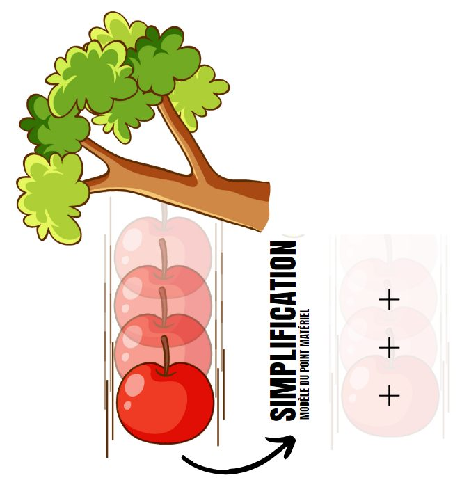
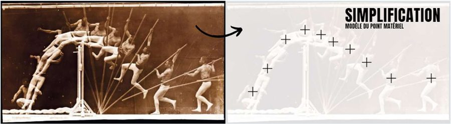
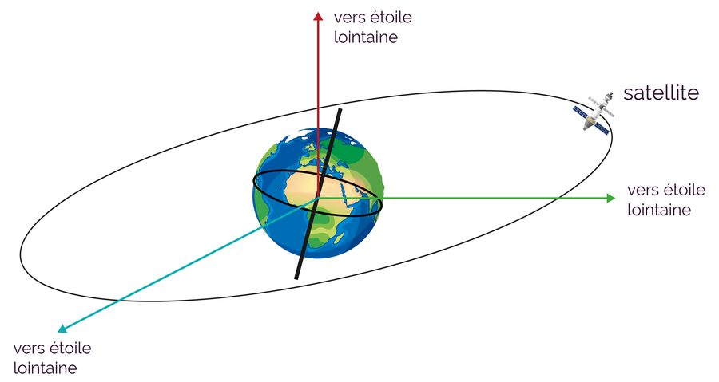
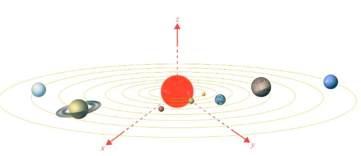
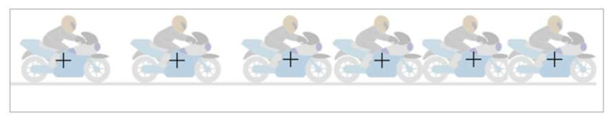

Décrire le mouvement
Ce chapitre sera débloqué en fin de séquence, au rythme de la classe. Le code de déblocage est transmis via le cahier de textes — il figure aussi en bas de ta fiche de cours.
Sommaire du chapitre
Physique-Chimie · 2nde · Thème 2 — Mouvements et interactions
Décrire le mouvement
Thème 2 · Chapitre 1 — cours & exercices corrigés
01 Système et référentiel
Pour étudier le mouvement d'un objet, il est nécessaire de fixer l'objet d'étude et ce par rapport à quoi le mouvement est décrit.
A — Le système
Un système est un objet, ou un ensemble d'objets reliés entre eux, dont on étudie ici le mouvement.
Pour simplifier cette étude, on modélise souvent le système par un point, son centre de gravité, auquel on attribue la masse du système. C'est le modèle du point matériel, on parle alors de mécanique du point.


Un système, réduit à un point. Reste à dire par rapport à quoi il bouge.
B — Le référentiel
Pour étudier le mouvement d'un système, il faut préciser le référentiel, c'est-à-dire la référence choisie (solide, point, système, …).
On associe à un référentiel un repère d'espace et un repère de temps.

Pour un athlète, l'horloge est le chronomètre qui décompte le temps et l'origine des dates est le moment du tir du pistolet, c'est-à-dire le moment où on démarre le chronomètre.
L'unité du Système International du temps est la seconde (s).
La description du mouvement d'un système dépend en premier lieu du choix du référentiel.
Trois référentiels reviennent sans cesse : à chacun son repère d'espace.
C — Exemples de référentiels
Pour étudier le mouvement d'un système sur la Terre, ou au voisinage de la Terre, on choisit le plus souvent le référentiel terrestre dont le repère d'espace est défini par le sol de la Terre ou par tout objet fixe par rapport au sol.

Pour étudier le mouvement d'un système tournant autour de la Terre (la Lune, les satellites, …) on utilise le référentiel géocentrique dont le repère d'espace est défini par le centre de la Terre et des étoiles lointaines considérées comme fixes.

Pour étudier le mouvement d'un système tournant autour du Soleil (la Terre, les comètes, …) on utilise le référentiel héliocentrique dont le repère d'espace est défini par le centre du Soleil et des étoiles lointaines considérées comme fixes.

02 Trajectoire et vecteur déplacement
Le référentiel choisi, on peut suivre les positions du point, l'une après l'autre.
A — Trajectoire et mouvement d'un système
La trajectoire d'un point matériel est la courbe formée par l'ensemble de ses positions successives dans un référentiel donné.
3 types de trajectoire et de mouvement associé sont au programme en Seconde :
- (à gauche) Lorsque la figure décrite est une droite, le mouvement est dit rectiligne.
- (au centre) Lorsque la figure décrite est un cercle, le mouvement est dit circulaire.
- (à droite) Lorsque la figure décrite est une courbe, le mouvement est dit curviligne.
Une chronophotographie est la superposition de clichés pris à intervalles de temps réguliers et permettant ainsi de repérer l'évolution de la position d'un objet au cours du temps, d'en tracer la trajectoire et d'en calculer la vitesse.
Décrire le mouvement figurant sur la chronophotographie ci-dessous.

Voir la correction
Correction rédigée par Claude — à valider : la case de correction est vide dans la source (diapo 4).
Le système étudié est le perchiste, modélisé par un point : son centre de gravité. Son mouvement est décrit dans le référentiel terrestre : l'appareil photo, le sol et le sautoir sont fixes par rapport au sol.
Les positions successives du perchiste ne sont pas alignées : elles dessinent une courbe. Dans le référentiel terrestre, le mouvement du perchiste est curviligne.
Le perchiste se déplace de la droite vers la gauche : il court, s'élève au-dessus de la barre, puis redescend vers la zone de réception. Seule la course d'élan, à droite, est presque rectiligne.
Pour aller plus loin que la forme de la trajectoire, il faut repérer chaque position par une flèche.
B — Vecteur position
Le vecteur position d'un système en mouvement dépend de l'origine du référentiel d'étude choisi.
Le vecteur position du point Mi par rapport à O se note ici OMi.

1. Positionner votre repère spatial.
2. Légender les points M7 et M13.
3. Tracer les vecteurs position OM7 et OM13.
Voir la correction
Correction rédigée par Claude — à valider : la source, même dans sa version « correction », laisse cet exercice graphique vierge.
Le repère spatial est libre : on choisit une origine O commode — ici le coin haut gauche du document — et deux vecteurs unitaires i (vers la droite) et j (vers le haut). Tout autre choix est correct : c'est justement ce que montre l'exercice suivant.
Les positions sont numérotées dans l'ordre du mouvement, à partir de M1, la croix la plus à droite en haut, puis M2 juste à sa gauche : ce sont les deux seules légendées sur le document. En comptant les croix le long de la trajectoire, on trouve M7 dans la descente, et M13 au début de la boucle vers la droite.
Chaque vecteur position part de l'origine O et pointe vers la position considérée : OM7 va de O à M7, OM13 va de O à M13. La flèche se place à l'arrivée, sur le point.
Attention : un vecteur position dépend de l'origine choisie. Avec un autre O, les deux flèches seraient différentes — alors que le mouvement du skieur, lui, n'a pas changé.
Si le vecteur position dépend de l'origine, que reste-t-il qui ne dépende que du mouvement ?
C — Vecteur déplacement
Le vecteur déplacement de ce système entre deux positions est la soustraction des vecteurs positions et ne dépend donc pas de l'origine du repère choisi.
OMi et OMj sont respectivement les vecteurs positions menant aux positions Mi et Mj.
1. Positionner votre repère spatial.
2. Légender les points M4 et M21.
3. Tracer les vecteurs position OM4 et OM21.
4. En déduire le vecteur déplacement M4M21 et le tracer.
Voir la correction
Correction rédigée par Claude — à valider : la source, même dans sa version « correction », laisse cet exercice graphique vierge.
On procède comme à l'exercice 2 : origine O au coin haut gauche, puis on compte les croix depuis M1. M4 se trouve juste après le point le plus haut de la trajectoire, M21 dans la partie basse, après la boucle de droite. On trace ensuite OM4 et OM21 depuis O.
MiMj = OMj − OMi
M4M21 = OM21 − OM4
Inutile de calculer quoi que ce soit : la soustraction se lit sur le schéma. Le vecteur déplacement est simplement la flèche qui joint directement M4 à M21 — les trois vecteurs forment un triangle qui se referme.
Si l'on avait choisi une autre origine, les deux vecteurs position auraient changé… mais M4M21 serait resté exactement le même. Le vecteur déplacement ne dépend pas du repère : il ne décrit que le mouvement.
03 Vitesse d'un système
Un déplacement ne dit pas en combien de temps il a été fait : divisons par la durée.
A — Vitesse moyenne
Le vecteur vitesse moyenne d'un système entre deux positions Mi et Mj se note vi→j et s'obtient par la relation :
Caractéristiques du vecteur vitesse moyenne vi→j :
- direction : colinéaire (parallèle) au vecteur déplacement MiMj ;
- sens : celui du mouvement ;
- norme : en m·s−1 avec pour valeur :
vi→j = MiMjΔti→j = MiMjtj − ti
Les images ont été prises à 0,5 s d'intervalle. L'échelle est de 1 cm pour 2 m.
1. Légender les points Mi.
2. Tracer les vecteurs vitesse v1→3 et v3→4. Vous respecterez l'échelle 1 cm pour 10 m·s−1.

Voir la correction
La moto roule vers la droite : M1 est la position la plus à gauche, M6 la plus à droite.
vi→j = MiMjΔti→j
v1→3 = M1M3Δt1→3
donc v1→3 est colinéaire à M1M3. Sur le schéma, M1M3 = 3,8 cm, soit 7,6 m dans la réalité :
v1→3 = M1M3Δt1→3 = 7,62 × 0,5 = 7,6 m·s−1 → 0,76 cm sur le schéma
v3→4 = M3M4Δt3→4
donc v3→4 est colinéaire à M3M4, avec M3M4 = 3,0 m :
v3→4 = M3M4Δt3→4 = 3,00,5 = 6,0 m·s−1 → 0,6 cm sur le schéma
Et si l'on rapproche les deux positions au plus près ? On obtient la vitesse en un point.
B — Vitesse instantanée
Le vecteur vitesse (vitesse instantanée) d'un système en un point Mi, noté vi, est approché par le vecteur vitesse moyenne entre deux positions infiniment proches : Mi et Mi+1 ; Mi+1 étant la position succédant à Mi.
ti+1 − ti la durée qui les sépare
Caractéristiques du vecteur vitesse instantanée vi :
- direction : colinéaire (parallèle) au vecteur déplacement MiMi+1 ;
- sens : celui du mouvement ;
- norme : en m·s−1 avec pour valeur :
vi = MiMi+1ti+1 − ti
Les images ont été prises à 0,5 s d'intervalle. L'échelle est de 1 cm pour 2 m.
1. Légender les points Mi.
2. Tracer tous les vecteurs vitesse instantanée vi.
Voir la correction (exemple pour v1)
vi = MiMi+1ti+1 − ti
v1 = M1M2t2 − t1
donc v1 est colinéaire à M1M2. Sur le schéma, M1M2 = 1,9 cm, soit 3,8 m dans la réalité :
v1 = M1M2t2 − t1 = 3,80,5 − 0 = 7,6 m·s−1 → 0,76 cm sur le schéma
Il n'est pas possible de créer le vecteur v6 car il nous faudrait pour ça un point M7.
La norme des vecteurs vitesse diminue car l'écartement entre les positions successives diminue également.
| Vecteur | Écart dans la réalité | Norme | Flèche sur le schéma |
|---|---|---|---|
| v1 | M1M2 = 3,8 m | 7,6 m·s−1 | 0,76 cm |
| v2 | M2M3 = 3,8 m | 7,6 m·s−1 | 0,76 cm |
| v3 | M3M4 = 3,0 m | 6,0 m·s−1 | 0,60 cm |
| v4 | M4M5 ≈ 3,0 m | 6,0 m·s−1 | 0,60 cm |
| v5 | M5M6 ≈ 2,7 m | 5,4 m·s−1 | 0,54 cm |
La vitesse est un vecteur : sa norme et sa direction disent, ensemble, la nature du mouvement.
C — Relativité et nature du mouvement
Le vecteur vitesse peut varier en norme (valeur), en direction, ou les deux.
Un mouvement uniforme correspond à une norme du vecteur vitesse constante.
Remarque : si la norme augmente avec le temps, le mouvement est accéléré ; si elle diminue, il est décéléré (ralenti).
Un mouvement rectiligne correspond à une direction du vecteur vitesse constante.
vitesse constante si la distance séparant 2 positions successives ne varie pas : mouvement uniforme
vitesse augmente si la distance séparant 2 positions successives augmente : mouvement accéléré
vitesse diminue si la distance séparant 2 positions successives diminue : mouvement ralenti
✓ Pour le DS, je sais :
M. Van HoordeLycée général Isaac de l'Étoile · Poitiers